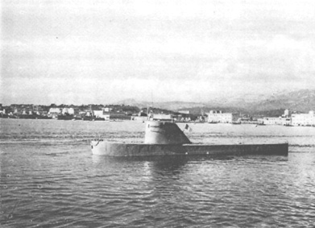

|
Cette campagne 1968, baptise opération REMINER (Recherche MINERVE) a été effectuée avec les moyens suivants : a) les moyens de la Mission Hydrographique de Dragage c'est à dire, le bâtiment hydrographe "LA RECHERCHE (ex GUYANE) de 810 tonnes équipé d'un sondeur EILAC, et de moyens de localisation précis grâce au système radioélectrique TRIDENT. b) les moyens du Groupe des Bathyscaphes c'est à dire du MARCEL LE BIHAN (ancien tender d'aviation allemand de 800 tonnes équipé d'une grue de 13 tonnes et du bathyscaphe ARCHIMEDE de 65 tonnes). L'ensemble de l'opération est menée par le C.V. HOUOT, Commandant le Groupe des Bathyscaphes avec l'IHC.2 PASQUAY, Chef de la Mission Hydrographique de Dragage, sous la haute autorité de l'amiral Préfet Maritime de la 3ème Région. Cette campagne s'est déroulée en deux phases. Dans un premier temps "LA RECHERCHE" a effectué des sondages systématiques dans les Secteurs 65 et 66 et leurs abords immédiats vers le Sud et l'Est. Dans cette zone les fonds sont de 2 000 à 2 500 mètres et sont apparemment assez plats. La zone située au Nord du Secteur 65 a par contre dû être négligée car elle se trouve sur le talus du plateau continental, où les fonts sont extrêmement tourmentés, avec des falaises et des canyons sous-marins qui forment en particulier les accores Est et Sud du Banc des BLAUQUIERES. Une recherche par sondeur sur un tel fond ne pouvait donc révéler la présence d'aucune épave. La zone considérée a été explorée par lignes de sondes espacées de 50 Mètres, 100 mètres, 200 mètres suivant les secteurs (secteur au 1/5000, 1/10000, 1/20.000). La marche normale est celle qui est faite avec l'écartement 100 mètres, l'écartement 50 mètres ayant été utilisé par comparaison dans une zone restreinte. L'écartement 200 mètres a été utilisé dans une zone plus étendue et qui est en cours d.'extension pour couvrir le point donné par l'avion, Partout dans cette zone, le fond est d'allure générale régulière. Il est en grande partie recouvert d'une couche sédimentaire avec de faibles accidents de relief (rochers, petites falaises). La qualité de cette exploration a été strictement liée aux caractéristiques du sondeur utilisé. Celui-ci (un sondeur allemand, ELAC sur 15 Kilocycles avec une ouverture total de 24 degrés) permet théoriquement de décaler des obstructions faisant saillie d'un mètre sur le fond, Dans la pratique ce chiffre a dû être évalué a quatre ou cinq mètres, en raison des pentes de légères vallées, et du fait que le sondeur, à chaque écho, couvre sur le fond un secteur circulaire ayant un rayon de 120 mètres, Dans ces conditions "LA RECHERCHE" a trouvé une quinzaine d'échos pouvant ressembler à une épave. Elle a dû alors se livrer à un travail de classement de ces échos en passant sur leur position à des routes différentes, grâce à la précision de 10 mètres donné par le système de navigation TRIDENT Le résultat de ce travail a été de classer deux échos comme correspondant certainement à une obstruction, certains autres étant classés comme seulement probable, les autres étant éliminés. Cette opération de classement est peut-être à l'origine de certains articles de presse qui ont prétendu que la "MINERVE" a été retrouvée. Une telle conclusion ne pouvait cependant être annoncée qu'après avoir formellement identifié à la vue les obstructions ainsi repérée. C'est bien d'ailleurs ce que devait démontrer la suite des opérations. Ajoutons que pour obtenir des précisions pareilles, sur la mesure du fond, il était nécessaire d'avoir du beau temps. Le mois d'août 1968 a été particulièrement défavorable. Dans la journée , il y avait un fort mistral, La RECHERCHE devait appareiller de nuit dès que le vent faiblissait. Un certain nombre de profils effectués dans des conditions de mer estimées comme "limite" ont dû être repris ultérieurement. Ce n'est qu'après ce travail préliminaire qu'a pu commencer le deuxième temps, celui de l'identification visuelle effectué par le bathyscaphe ARCHIMEDE. Celui-ci a effectué sept investigations menées de la façon suivante : a) La RECHERCHE conduit le "MARCEL LE BIHAN" à proximité de l'écho dont il faut effectuer la reconnaissance, puis place ce bâtiment par rapport à elle-même et exploite les renseignements en azimut-distance de l'ARCHIMEDE donnés par le MARCEL LE BIHAN. Pour les deux dernières plongées cette méthode assez lourde interrompant les travaux de sondage, un récepteur TRIDENT prélevé sur un autre bâtiment de la MHD a été installé sur le MARCEL LE BIHAN, en arrêtant quelques jours ses travaux. b) L'ARCHIMEDE prêt à plonger est remorqué par le MARCEL LE BIHAN en une position telle que, compte tenu d'une légère dérive il puisse arriver à quelques centaines de mètres de l'écho à explorer : ceci afin d'éviter que le Bathyscaphe ne se pose sur l'épave. c) L'ARCHIMEDE, étant en liaison avec le MARCEL LE BIHAN par phonie ultrasonore, se fait positionner par moyens également ultrasonores. Le MARCEL LE BIHAN donne à l'ARCHIMEDE l'azimut et la distance de l'écho, L'ARCHIMEDE se dirige, alors vers le point indiqué, rendant coopte de ses mouvements, et se faisant placer à nouveau en cas de nécessité. Cette méthode donne une incertitude totale de 300 mètres sur le positionnement de l'ARCHIMEDE. Elle a cependant abouti à d'excellents résultats car cette erreur est cohérente avec les moyens de détection propres de l'ARCHIMEDE (un sonar panoramique STRAZZA). Celui-ci a donc pu arriver à la vue des épaves, malgré la visibilité très limitée du hublot de l'ARCHIMEDE et le fait que dans l'obscurité totale de ces profondeurs, ses projecteurs pourtant très puissants ne permettent guère de voir à plus d'une dizaine de mètres. Plusieurs fois d'ailleurs le guidage a été inutile, l'ARCHIMEDE ayant eu l'écho de l'obstruction avant d'arriver au fond. C'est alors la partie la plus spectaculaire de l'opération. La première plongée de l'ARCHIMEDE à lieu le 17 Septembre par fond de 2 300 mètres. A 50 mètres du fond, il obtient un écho à 600 yards sur le sonar STRAZZA, Il s'approche lentement de cet écho et le voit se dédoubler, un écho paraissant avoir 90 mètres de long, l'autre 30 mètres, Il détecte aussi de nombreux petits échos sur une centaine de mètres deux échos principaux. A une dizaine de mètres se l'écho le plus petit les passagers de l'ARCHIMEDE aperçoivent par le hublot un amas de cornières et de tôles tordues. Entre les deux épaves le sol est jonché de débris métalliques informes. A proximité de l'épave la plus importante, l'ARCHIMEDE aperçoit une paroi presque verticale qu'il accoste et sur laquelle il glisse et rague, cette coque étant revêtue d'une faune très dense. Il distingue alors un hublot puis deux autres et ce qui semble être un garde-hélice Il se rend alors à l'évidence, cette épave n'est pas celle de la MINERVE, mais celle, ancienne d'un bâtiment inconnu. Au retour en surface, on constate des traces de ragage sur le plexiglas bâbord de l'encorbellement des projecteurs, avec des traînées apparentes d'une peinture probablement blanche. Le 20 septembre, l'ARCHIMEDE plonge sur un deuxième écho, Il obtient un écho à 400 yards alors qu'il est encore à 150 mètres de fond, Il se dirige sur cet écho sans se faire conduire par le MARCEL LE BIHAN, à une centaine de mètres de l'écho, l'épave se dessine parfaitement sur l'écran du sonar. Elle a 60 mètres de long. En se rapprochant l'ARCHIMEDE voit une hélice tripale et un étambot de cargo, Il fait le tour de l'épave qui est couverte d'animalcules non identifiés. Il voit alors des filins et des câbles d'acier qui pendent le long du bord comme s'ils provenaient de bossoirs. Il aperçoit également des objets correspondant à des petite échos voisins, un cube métallique de 2 mètres de côté qui pourrait être une petite passerelle et un coffre métallique, C'est donc encore une déception Ce deuxième écho investigué n'est pas la MlNERVE. Cette déception se répétera avec les autres échos qui se révélèrent à la vue n'être que des accidents du fond, ce que le Commandant HOUOT appelle le minirelief de cette plaine abyssale, petites falaises ou masses rocheuses sortant de la couche sédimentaire. Au cours de ces plongées, il est détecté et aperçu des objets de petites dimensions. On peut extraire du compte rendu du Commandant du Groupe des Bathyscaphes le récit d'autres plongées. Moins faciles que celles dont nous avons parlé jusqu'ici, car les objets recherchés étaient plus difficiles à identifier. 4ème plongée 8 octobre - OSCAR NEUF - profondeur 2 350 mètres Le MARCEL LE BIHAN laisse à l'ARCHIMEDE liberté de manœuvre pour aller explorer deux échos proches qu'il lui a signalés à son arrivée sur le fond. Le premier correspondant aux ailettes d'une roquette plantée dans le sol, le deuxième est celui d'une masse rocheuse isolée de 3 mètres de haut et de 5 mètres de diamètre a demi enfoncée dans le sédiment comme si elle avait creusé une souille. Un positionnement effectué près de ce rocher indiqua à l'ARCHIMEDE qu'il se trouve dans le 115 et à 1 000 mètres de OSCAR 9. A mi-parcours un bon écho métallique l'incite à infléchir sa route vers le 240. Une deuxième roquette est repérée, L'ARCHIMEDE fait ensuite route au 350 vers OSCAR 9 et estimant avoir parcouru le chemin prescrit redemande un positionnement, OSCAR 9 lui est signalé dans le 035 à 700 mètres Ce trajet ayant été effectué sans rien découvrir d'autre que de très petites variations de pente, l'ARCHIMEDE explore un faible écho de relief d'une centaine de mètres de longueur et situé dons le 150 à 300 mètres de la position estimée de OSCAR 9 puis continue en direction du rocher isolé près duquel il se fait à nouveau positionner. Le MARCEL LE BIHAN le trouve dans le 090 à 1 000 mètres d'OSCAR 9 ce qui confirme l'estime. Après 600 mètres de parcours et sans avoir rien découvert de nouveau il est obligé d'interrompre la plongée, les batteries étant déchargées. 5ème plongée - 11 octobre - OSCAR 9 Estimant que la région Ouest de l'écho OSCAR 9 n'a pas été explorée au cours de la plongée du 8 Octobre, j'envoie à nouveau l'ARCHIMEDE sur cet écho. (C'est le Commandant HOUOT qui parle) Un premier positionnement, place le bathyscaphe à 200 mètres d'OSCAR 9. Un deuxième le situe peu après pratiquement sur la position d'OSCAR 9. L'ARCHIMEDE pendant ce court déplacement n'a observé qu'une faible pente de 5 à 10º qui semble orientée au 160. Le MARCEL LE BIHAN lui donne alors liberté de manœuvre, comme il était convenu à l'ouest d'OSCAR 9. Faisant route au sud-ouest puis au Nord-Ouest il découvre 1 000 mètres plus loin l'écho d'une falaise sédimentajre orientée au 290 et longue de 500 mètres. Il se fait positionner et se trouve dans le 260 et à 1 000 mètres de OSCAR 9. De là il se dirige successivement au nord-est puis au sud-est afin de revenir vers OSCAR 9. C'est en ralliant ce point par le Nord-Ouest qu'apparaît sur le scope du sonar un écho de relief de 100 mètres de long orienté au 250. La pente faible et progressive de ce relief n'a pas permis en début comme en fin de plongée d'en apprécier la hauteur. 6ème plongée - le 15 octobre - OSCAR 17 - L'ARCHIMEDE arrivé sur le fond est sur une butte ( pente 8º il se fait positionner. Il est envoyé sur OSCAR 17 dont il est à 500 mètres dans le 307. L'ARCHIMEDE en se rendant sur OSCAR 17 rencontre de nombreuses buttes (échos, sonar, diffus et flous). La pente est telle qu'il arrive que l'avant du pont roulant se plante dans la vase. Un écho métallique dans le 10 à 400 yards déroute l'ARCHIMEDE. Cet écho est un bidon du genre fût d'huile de 200 litres. Echec donc, l'épave de la MINERVE n'a pas été retrouvée Nous ne pouvons pas non plus assurer qu'elle ne se trouve pas dans la zone explorée. Une campagne 1969 est donc nécessaire, et elle sera effectuée. Pour tenir compte des enseignements de 1968 pour cette nouvelle campagne 1969, il convient d'abord de remarquer que la partie identification visuelle a très bien fonctionnée, Le système MARCEL LE BIHAN - ARCHIMEDE positionné par le TRIDENT a rempli sa fonction et trouvé des objets de très petites tailles. Il a donné des résultats supérieurs à ceux que l'on pouvait espérer. Il sera donc à réutiliser intégralement pour toute mission du même genre, l'expérience acquise permettant des perfectionnements de détail. La faible mobilité du bathyscaphe rend cependant nécessaire un moyen d'exploration systématique dont l'ARCHIMEDE exploite les contacts. C'est ce moyen qui s'est révélé insuffisant en 1968. Les raisons de cette insuffisance sont maintenant flagrantes depuis que l'on connaît mieux la nature du fond, et ce minirelief relativement accidenté qui peut masquer l'épave de la MINERVE à un sondeur de surface. La campagne 1969 (Cette campagne commencera dès le mois de Mars) aura donc deux temps : D'abord, on va continuer avec ce que l'on a. Dire que l'on ne peut assurer que la MINERVE n'est pas dans la zone explorée ne permet pas de dire qu'elle n'est pas non plus en dehors de cette zone. Nous sommes donc tout naturellement conduits à étendre le champ de nos explorations sur tous les indices. Si l'exploitation de la zone autour de la tacha d'huile reste tout aussi difficile du fait du relief, la position donnée par l'ATLANTIC reprend de la valeur. Dans les mois qui suivent la RECHERCHE va donc couvrir au sondeur un cercle de 5 nautiques centré sur la position déterminée par le BREGUET ATLANTIC. L'ARCHIMEDE va faire des plongées sur des contacts qu'elle aura pu ainsi trouver. Le deuxième temps commencera quand nous aurons acquis des moyens nouveaux prenant la place du sondeur de la RECHERCHE. Ces moyens nouveaux nous sont indiqués par la documentation Américaine que nous possédons sur les recherches du THRESHER et du SCORPION. Le procédé qui à été employé dans les deux cas est basé sur l'emploi de magnéto-mètres qui signalent la présence d'objets métalliques posés sur le fond. Ce procédé affranchit des problèmes posés par le minirelief et permet d'éviter de faire plonger le bathyscaphe sur des échos de falaise et de roche. On arrive
ainsi à un poisson que l'on traîne au bout d'une remorque de 6 000
mètres de long et qui comporterait : Ce dernier système est rendu nécessaire par l'incertitude de position de ce poisson par rapport à son remorqueur, étant donné la longueur de la remorque. Si les moyens financiers nécessaires ne peuvent être dégagés, on sera obligé de se contenter d'une solution de pauvre, en essayant d'utiliser la troïka du Commandant COUSTEAU avec un nombre très restreint de 'senseurs', donc avec des chances réduites de succès. (En fait la décision vient d'être prise d'acquérir deum systèmes TROIKA équipés chacun de deux cameras photographiques et d'un flash. Le projet d'acquérir ultérieurement un matériel plus élaboré n'est pas abandonné.) En fait et ceci sera ma conclusion, la Marine Nationale a constaté que le problème des recherches par grands fonds posé par la MINERVE avait une importance gui dépassait de beaucoup la détermination des causes de la perte de la MINERVE. Tout en ayant une ferme volonté de déterminer ces causes, l'analyse du problème montre que d'autres missions peuvent nous être demandées dans ce domaine comme cela a été le cas pour la Marine Américaine quant on lui a donné la mission de la recherche de la bombe de PALOMARES. Tout récemment d'ailleurs le Secrétariat Général de l'Aviation Civile nous a demandé notre concours pour rechercher la CARAVELLE tombée au Sud de NICE par des fonds de 2 000 mètres environ. Un monde nouveau s'ouvre donc à la Marine dans son propre domaine d'action, mais pour arriver à percer les secrets qu'il cache, tout un matériel, toute une technique sont nécessaires. Cette première campagne 1968 nous aura permis dans ce domaine de franchir un grand pas et de déterminer l'orientation qu'il nous faut prendre pour progresser, même si le but direct n'a pu être atteint. |
|||
|
 L'ARCHIMEDE à flot |
|||
|